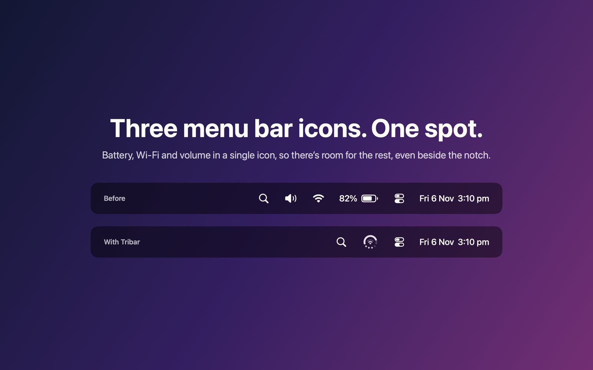
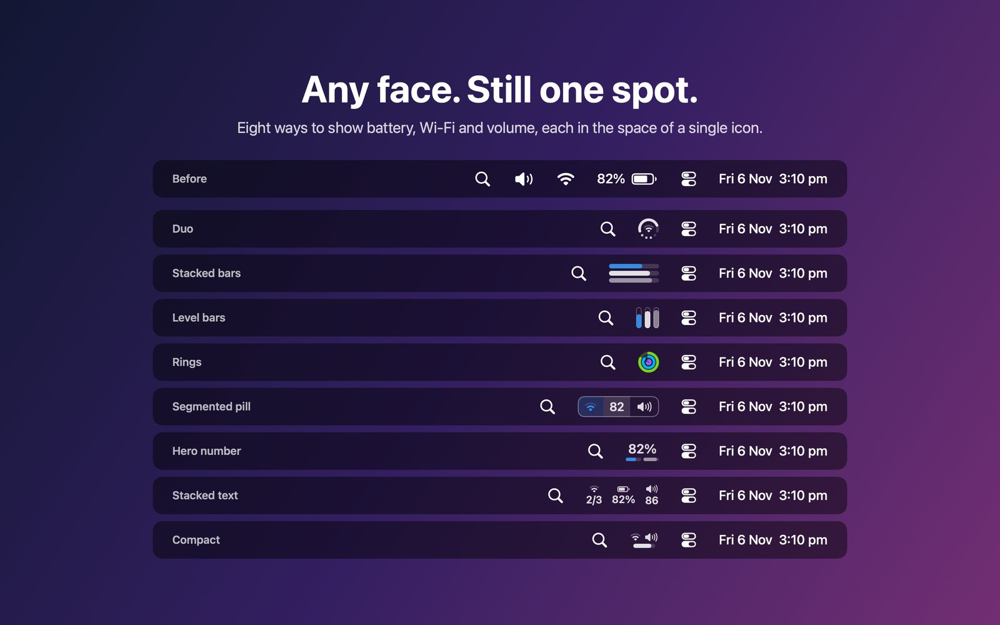
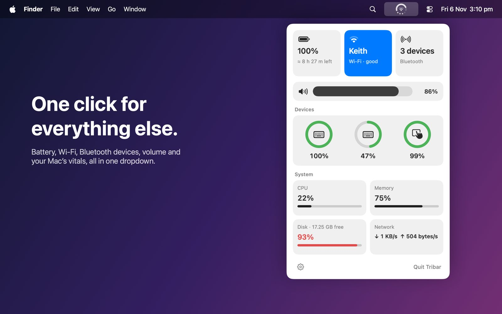
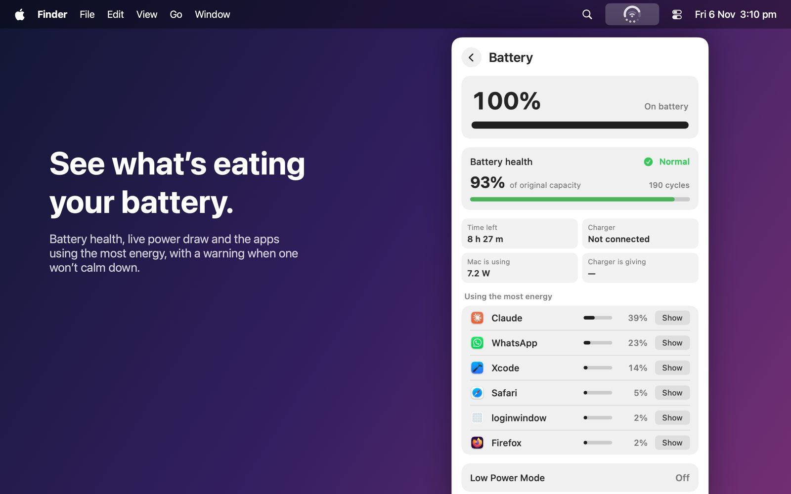
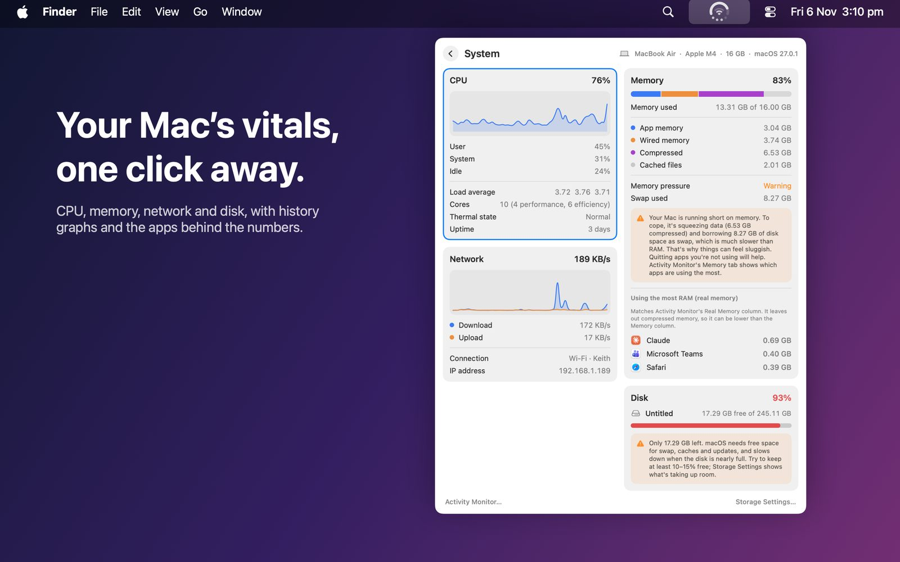
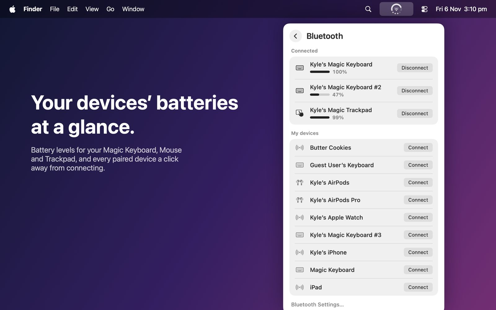
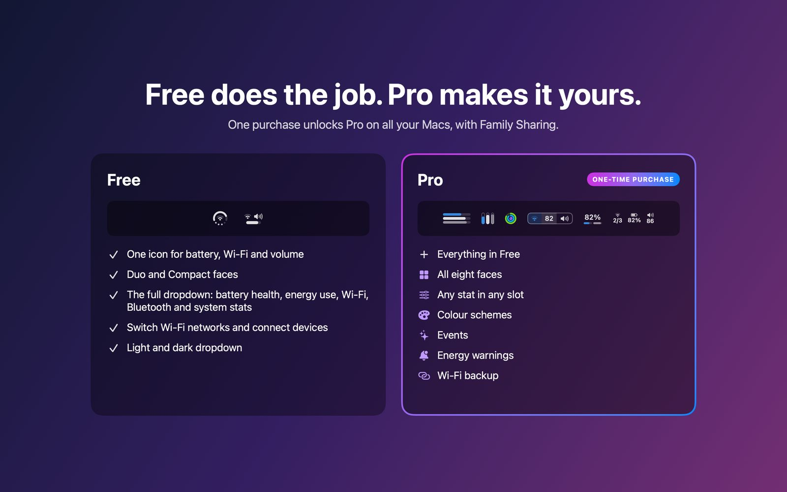

Three menu bar icons.
One spot.
Your menu bar is full, and on a MacBook the notch hides whatever doesn’t fit. Tribar replaces the battery, Wi-Fi and volume icons with one icon that’s big enough to read at a glance. Click it for everything else.
Free to download · Pro is a one-time purchase · macOS 14 Sonoma or later

Eight faces. Your three stats.
Pick the look you can read fastest, then choose what each part of the icon shows.

Battery
Charge, time left, battery health and cycle count, charger wattage, live power draw and the apps using the most energy.
Wi-Fi
See nearby networks and switch with a click. Optionally fall back to your iPhone hotspot when Wi-Fi drops.
Bluetooth
Battery levels for your Magic Keyboard, Mouse and Trackpad, and connect or disconnect devices in one click.
System
CPU, memory, network and disk with two-minute graphs, plus the apps using the most memory.
Events
The icon briefly shows what changed, like a charger plugged in or a device connecting, then goes back to normal.
Light on your Mac
Well under 1% CPU while idle. No accounts, no analytics, nothing sent anywhere.




Free does the job. Pro makes it yours.
Free gives you the single icon and the full dropdown. One purchase unlocks Pro on all your Macs, with Family Sharing.
